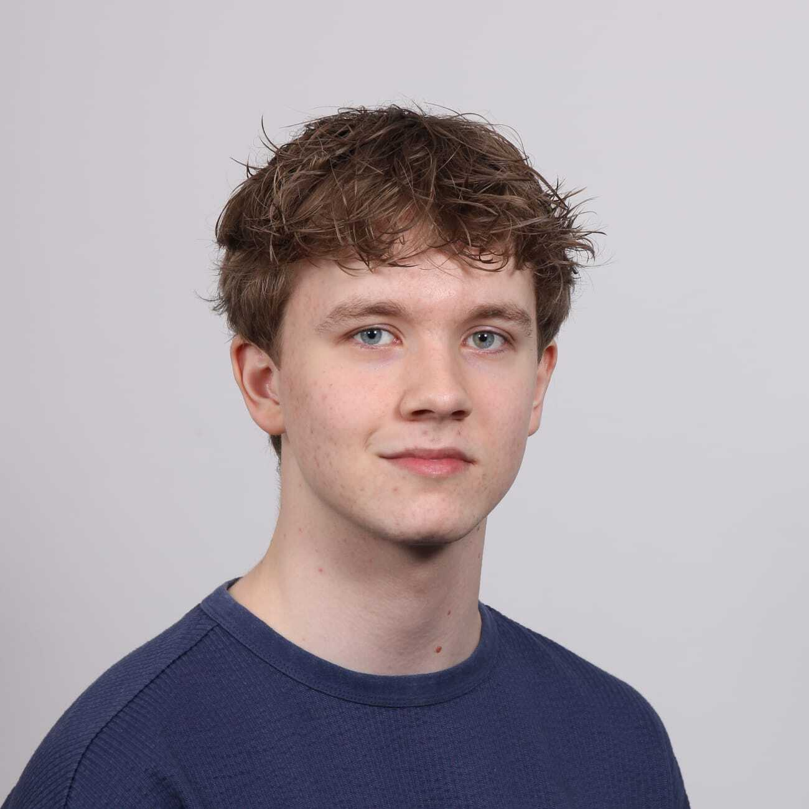

Rick Deurloo
Eigenschappen & Talenten
Ik heb een goed oog voor design en ben een beetje perfectionistisch. Ik hoop beter te worden in responive design en producten optimaliseren voor alle mensen.
Hobby's
Ik hou van Gamen en Anime kijken. Ik speel vooral veel Geometry Dash, wat ik al een hele tijd speel en ook video's over maak op Instagram.